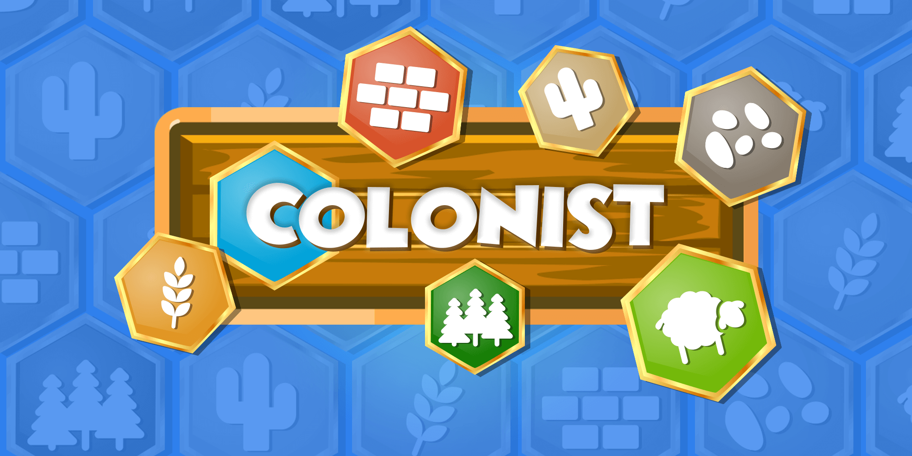
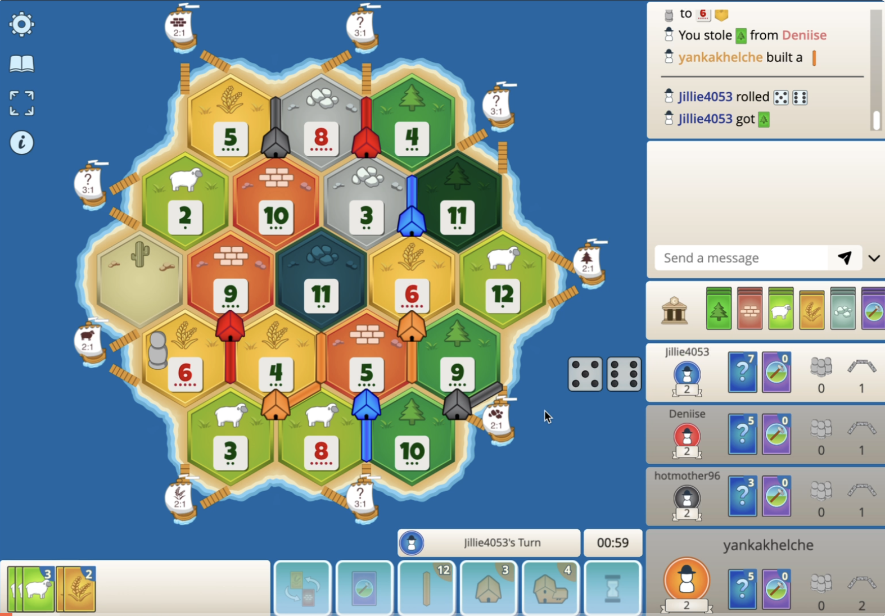

The Hard Truth About Your Colonist.io Runs
You keep losing because you play like a tourist. I have over two thousand hours in Colonist.io. I have watched you throw away winning positions with the same pathetic, predictable blunders. You think this game is just rolling dice and hoping for a six. It is not. It is a ruthless math and negotiation simulator, and right now, you are the prey. Every time you sit at a three tile intersection and whine about bad luck, you ignore the fundamental mechanics that actually decide the game. You are bleeding resources, misreading the board, and handing victory to your opponents on a silver platter. Stop crying about the dice. Read these fatal mistakes, fix your broken strategy, and actually start playing to win.
| # | Mistake | Quick Fix |
|---|---|---|
| 1 | You Ignore the Six and Eight | Prioritize the six and eight above all else during your initial placement |
| 2 | You Overbuy Development Cards | Only buy development cards when you have a massive surplus of resources and y... |
| 3 | You Neglect the Ports | Actively route your early roads toward the outer coast |
| 4 | You Trade With the Leader | Always check the victory point scoreboard before accepting any trade |
| 5 | You Waste Roads in the Open | Only build roads when you have a specific, immediate target |
| 6 | You Upgrade to Cities Too Late | Plan your city upgrades from the very beginning of the match |
You Ignore the Six and Eight
You place your initial settlements on pretty looking corners with three different resources, completely ignoring the probability numbers. You grab a three tile intersection featuring a two, a three, and a twelve. You think you are being diverse. You are actually starving yourself. In Colonist.io, the numbers dictate the flow of the entire game. The six and the eight are the undisputed kings of resource generation. When you bypass them for the sake of resource variety, you voluntarily handicap your early game economy. You sit there watching your opponents hoard brick and wood while you collect a single sheep every third turn.
This mistake kills you in the first ten turns. Colonist.io is a race to ten victory points. If you do not generate consistent resources early, you cannot build roads. If you cannot build roads, you cannot claim new territory. Your opponents will lock you out of the high probability tiles and secure the critical ports. You become a passive observer. The game mechanics punish low probability placements ruthlessly because the dice simply will not land on your tiles. You run out of time and resources before you even lay your second settlement.
Prioritize the six and eight above all else during your initial placement. Your first settlement must hit at least one six or eight. Your second settlement should hit another high probability number, even if it means duplicating a resource. You need a reliable economic engine first. Once you secure the high probability tiles, you can use the early road building phase to expand toward ports. Trade your duplicate resources at the bank or with players to fix your economy. Never sacrifice probability for early diversity.
You Overbuy Development Cards
You hoard sheep, wheat, and ore to blindly spam development cards. You think you are playing the meta. You are actually feeding the bank. Development cards in Colonist.io are a pure gamble. You spend three resources for a chance at a victory point, a knight, or a useless road building card. While your opponents are spending those exact same resources to build reliable settlements and cities, you are staring at a hand full of paper. You ignore the tangible board presence because you are addicted to the slot machine mechanic.
This destroys your board position and your victory point trajectory. Settlements and cities guarantee points. Development cards do not. If you buy four cards and get zero victory points, you have wasted twelve resources. Your opponents, meanwhile, built two settlements and secured four points. You fall behind on the board, lose access to new tiles, and get blocked. The game ends before your dev card gamble pays off. You cannot win a race to ten points by hoping the deck likes you.
Only buy development cards when you have a massive surplus of resources and your board expansion is completely locked down. Use them strictly as a late game accelerator, never as an early game strategy. If you need a specific resource to build a crucial city, build the city right now. Do not buy a card instead and hope for the best. If you do buy cards, play the knights immediately to build the largest army and secure two extra points. Otherwise, stick to the reliable math of roads and settlements.
You Neglect the Ports
You keep your settlements trapped in the center of the hexagonal map. You ignore the coastline completely. You think inland expansion is the only way to win. You are wrong. Ports are the lifeline of your trading economy. When you fail to secure a two to one or three to one port, you are forced to rely on the terrible four to one bank trade ratio. You sit there with five sheep and no ore, unable to build a city, while your opponents smoothly trade at the docks.
Without ports, your resource management becomes incredibly inefficient. The four to one bank trade ratio is a trap. It costs you too many cards to get the single resource you need. When the board blocks your inland expansion, you have no alternative way to acquire missing resources. Your economy stalls. You cannot upgrade to cities because you lack the specific ore and wheat. You become entirely dependent on other players trading with you, and in a competitive game, they will starve you out.
Actively route your early roads toward the outer coast. Secure at least one three to one port during your initial expansion phase. This immediately improves your baseline trading efficiency. Later, target specific two to one ports that match your highest producing resources. If you are producing massive amounts of brick, get the brick port. This allows you to dump your excess resources at the bank efficiently. Ports turn your dead resources into active victory points. Never let your opponent lock you out of the coastline.

You Trade With the Leader
You accept trades from the player sitting at eight victory points. They ask for your wheat, and they offer you a single brick. You take the deal because you want the brick. You are an idiot. In Colonist.io, trading is not just about getting what you need. It is about controlling the board state. When you give the leader the exact resource they need to build a city, you are handing them the win. You ignore their victory point count and focus only on your own immediate, short term gain.
This mistake literally hands your opponent the game. The victory point threshold is ten. If a player has eight points, they only need two more. A city is worth two points. By trading them the wheat they lack, you fund their final upgrade. They reach ten points, the game ends, and you lose. You cannot win if you are actively building your opponent victory path. The trading mechanic is a weapon. If you use it against yourself, you deserve to lose.
Always check the victory point scoreboard before accepting any trade. If a player is at eight or nine points, refuse their trades unless it absolutely guarantees your own win on that exact turn. Do not help them reach ten. Instead, trade exclusively with players who are behind you. Use the trading phase to build alliances and block the leader. If the leader needs ore, do not offer it. Force them to rely on the bank or their own dice rolls to win.
You Waste Roads in the Open
You build long, continuous roads straight into empty space. You think distance equals dominance. You are just burning brick and wood. In Colonist.io, roads are only valuable if they secure a new settlement or block an opponent. When you extend a road into the open ocean or unclaimed desert without a clear target, you waste two critical resources. You leave yourself vulnerable. Your opponent simply builds a single road to cut you off, rendering your entire long road completely useless for future expansion.
Roads cost two resources each. That is a massive investment. If you build a road that does not lead to a high probability intersection or a port, you have thrown away the equivalent of a partial settlement. Worse, open roads are easily blocked. The game mechanics allow players to cut off your expansion paths. Once you are blocked, those resources are gone forever. You fall behind in the infrastructure race, and your opponent claims the best remaining tiles while you stare at a useless dirt path.
Only build roads when you have a specific, immediate target. Calculate the exact intersection you want to reach before you lay the first piece. If an opponent is contesting the same tile, build defensively to block them. Do not build into the open just to look busy. If you lack a clear target, save your brick and wood. Wait for the right moment to strike. Every single road must serve a strategic purpose, either securing a new settlement or cutting off an enemy.
You Upgrade to Cities Too Late
You build three or four settlements and just keep building more settlements. You ignore the upgrade path. You think spreading out is always better. You are falling for a classic trap. Cities cost more resources, but they produce double the goods and are worth two victory points. By refusing to upgrade your early settlements to cities, you artificially cap your resource income and slow down your victory point accumulation. You are playing a slow, inefficient game while your opponents accelerate.
Settlements only produce one card per dice roll. Cities produce two. In the mid game, the resource bottleneck becomes severe. If you do not upgrade to cities, you simply cannot generate enough ore and wheat to keep up with the board pace. You will lack the resources to build roads or buy dev cards when you need them. Furthermore, cities give you two points for the upgrade cost of one city. Delaying this upgrade means you need to build twice as many settlements to win, which is mathematically impossible on a crowded board.
Plan your city upgrades from the very beginning of the match. Your initial settlements should be placed on tiles that produce wheat and ore. As soon as you have the resources, upgrade your highest probability settlements to cities. Do not build a third settlement until you have at least one city. Cities double your economy and accelerate your point total. Secure the high yield tiles early, upgrade them quickly, and let the massive resource generation fund your final push to ten points.

The Bottom Line
Colonist.io is not a game of luck. It is a game of ruthless efficiency and board control. The players who win are the ones who respect the math, secure the high probability tiles, and manage their trades like a weapon. Stop making these fatal mistakes. Stop feeding the bank, stop ignoring the ports, and stop handing the victory to the leader. Master the probabilities, build your cities, and control the board. Now get back in the lobby and prove you actually learned something.